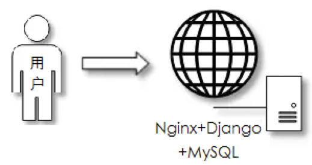
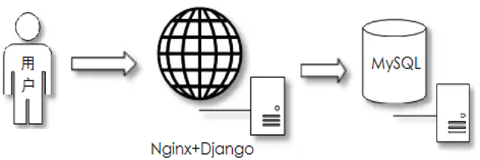
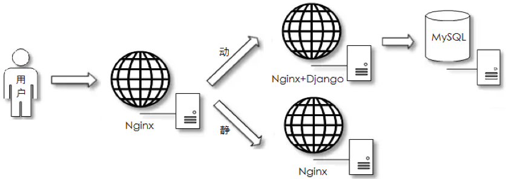
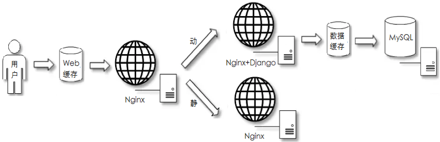
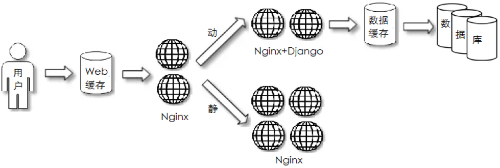
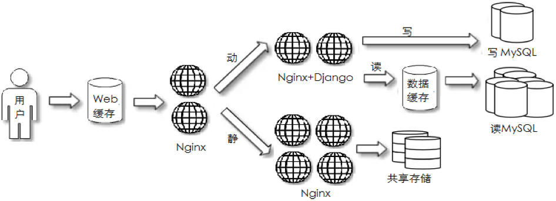
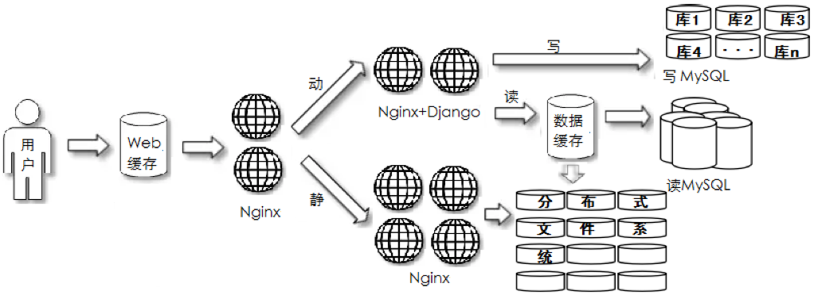
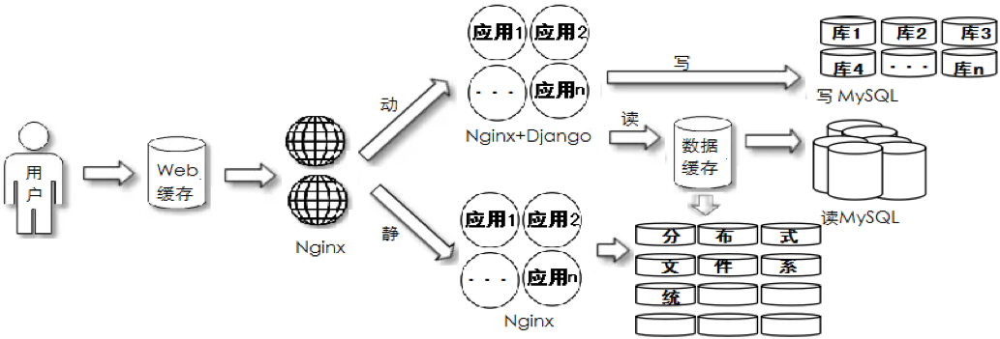
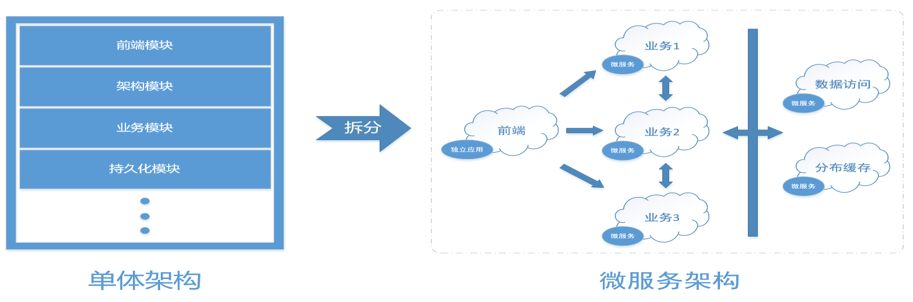
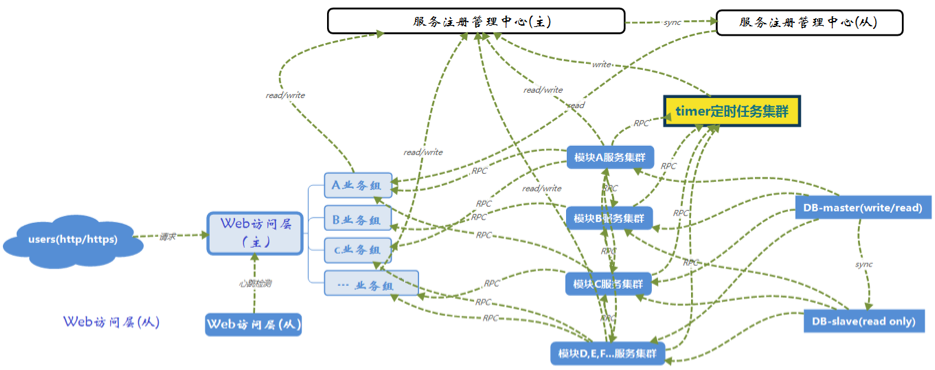

架构演变
项目的架构
一般来说，任何一个项目至少有三层内容来组成：
web访问层、数据库层、存储层
初级阶段
1、单体阶段
常见场景：项目初期
部署特点：所有应用服务都在一台主机
应用特点：开发简单

2、应用/数据分离阶段
常见场景：项目初期，用户访问数据库有压力
部署特点：应用和数据库单独部署
应用特点：开发简单

3、页面动静分离阶段
常见场景：项目初期，用户访问页面有压力
部署特点：剥离用户读请求和写请求操作
应用特点：开发简单

4、页面/数据缓存阶段
常见场景：项目初期，用户访问有压力
部署特点：代理和数据库前面增加缓存组件
应用特点：开发简单

中期阶段
1、应用服务集群阶段
常见场景：项目初期，用户访问有压力
部署特点：应用服务所在主机做集群负载均衡
应用特点：业务中等

2、数据库读写分离化
常见场景：项目初期，用户访问数据有压力
部署特点：对数据库集群做读写分离，静态文件做共享存储
应用特点：业务中等

3、存储分布式
常见场景：项目中期，数据存储有压力
部署特点：对数据库分库/分表扩展，数据文件使用分布式存储
应用特点：业务中等

4、业务应用拆分
常见场景：项目中期，业务访问/团队管理有压力
部署特点：项目应用进行拆分
应用特点：业务复杂

中后期阶段
1、业务拆分
常见场景：项目中后期，业务处理有压力
部署特点：所有功能以服务形式单独部署，引入配置管理管理中心、消息中间件，搜索引擎等功能
应用特点：业务复杂
2、微服务阶段
常见场景：项目后期，精益求精
部署特点：所有服务都可以自由部署
应用特点：业务复杂

